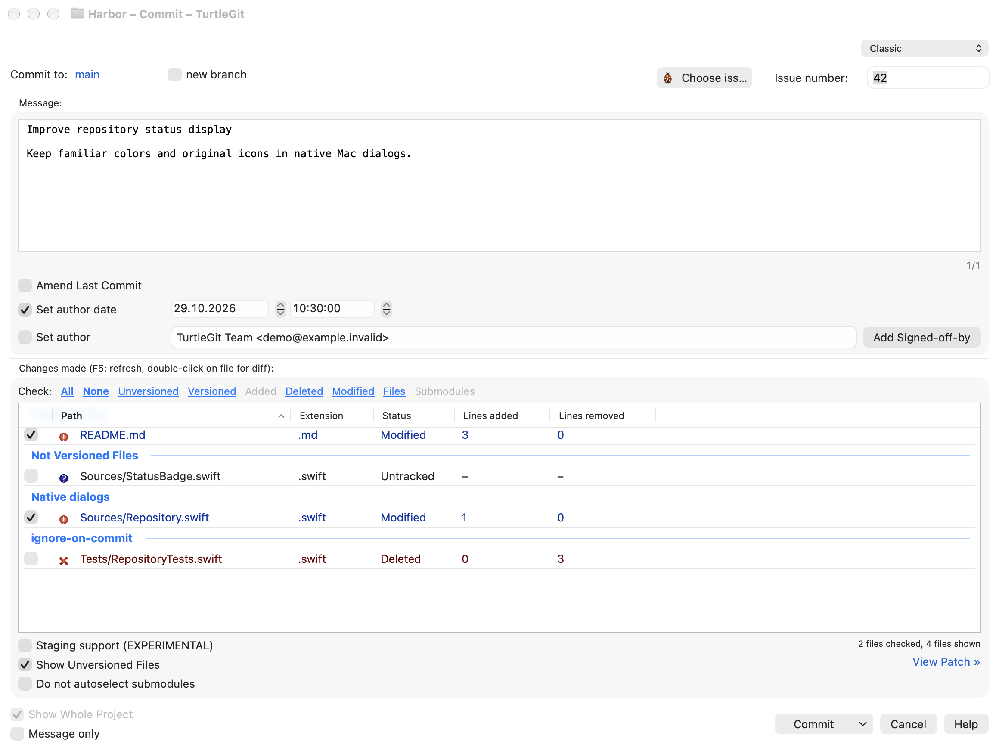
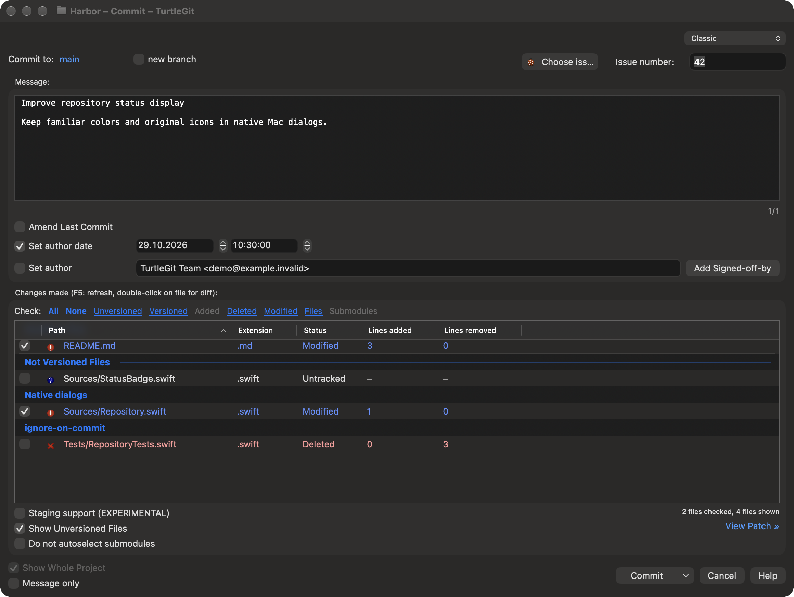
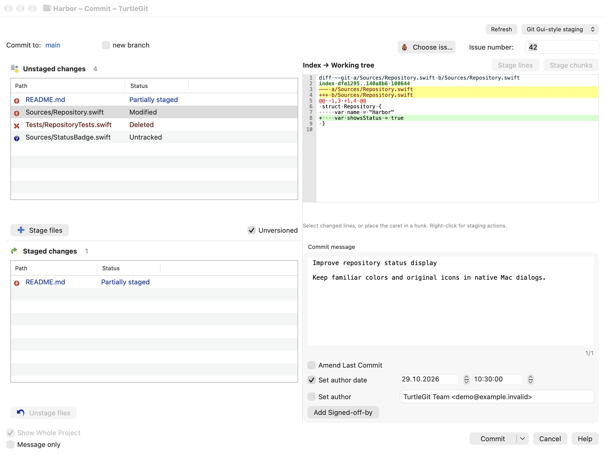
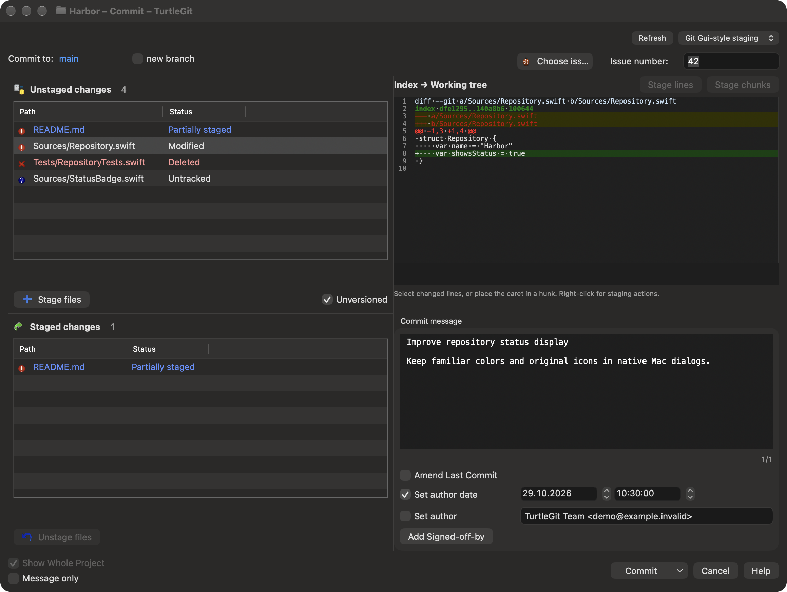
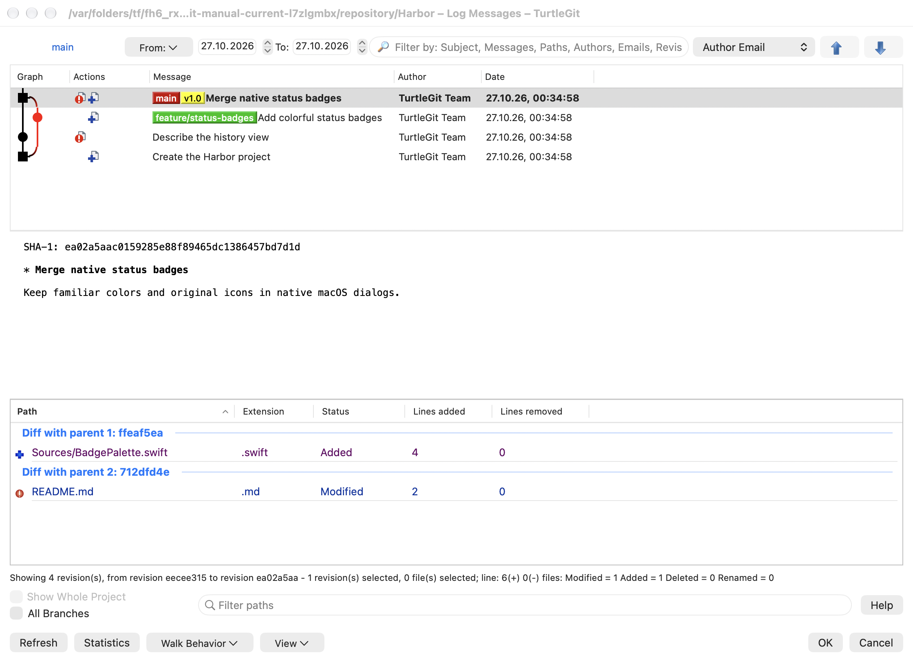
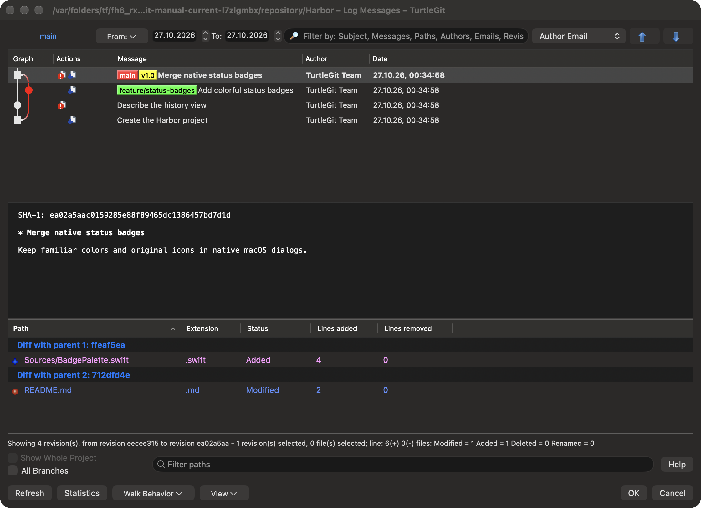
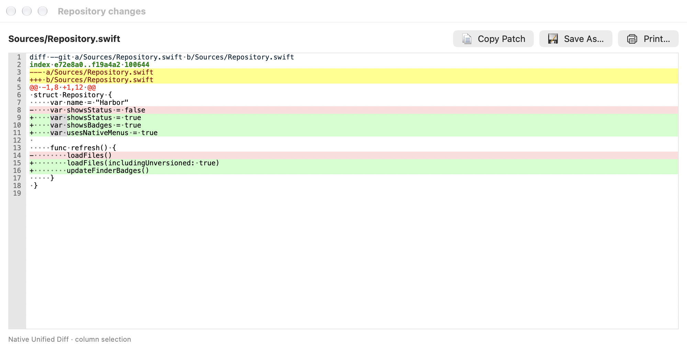
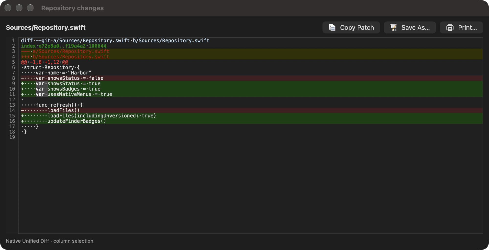

TurtleGit dialog guide
These instructions describe the implemented macOS workflows. The complete TortoiseGit port and signed Finder/App Store acceptance remain in progress. Start with Getting started and repository folder access when opening a repository.
Edit Notes
Log, RefLog, Rebase and Synchronization share the source-shaped multiline Notes
editor, original edit command artwork, project minimum length and message styling.
Missing author/committer details offer repository Git Settings and are checked
again after it closes. Saving retains the captured commit and notes ref; Cancel
requests cancellation while the editor waits for its Git child. Ordinary errors
retain the draft; confirmed saves with failed refresh and uncertain mutation
outcomes have separate recovery messages. See Editing Git notes
and the source comparison.
The editor chooses core.notesRef or refs/notes/commits, independently of
GIT_NOTES_REF. The stored note commit uses configured user.name and
user.email for both identities; environment identity overrides do not replace
those values. See Notes storage for source behavior and
recovery limits.
Clone and create
Use Clone to choose a repository URL and a destination folder. Choose an empty or new destination, review the branch and clone options, then start the operation. The progress window reports Git's output and offers cancellation. A cancelled or failed clone can leave files in its destination; inspect them before retrying.
Clone output includes the actual quoted command and colored completion status, with optional timing/date and a retained 100 percent bar. SSH-setting warnings and opening the repository are separate phases; a successful Git clone can still need Retry opening repository, which does not clone again. Review a warning before using Show Log or Show in Finder. Those actions release the Clone result and options first, then open the captured destination with the original settings. If Git completed before cancellation, the result retains that success. Cancellation stops automatic opening and key setup. Explicitly retry opening or key configuration to continue; neither choice clones again. Key setup verifies that the destination still contains the repository that Clone inspected.
Create Repository initializes Git in the selected folder. Choose a bare repository only when you want repository storage without a working tree. Authorize the folder when macOS requests access. For a new repository folder, authorize an existing parent that contains the destination. Cancelling authorization stops the Init request. After Clone or Create Repository succeeds, TurtleGit opens the result when the workspace finishes its current operation. If several creations finish while it is busy, the latest result opens. Choosing Open Repository or Close Repository before that handoff takes priority. Closing the workspace cancels its automatic handoff; the new repository remains on disk and can be opened later.
Init checks special-folder and nonempty-bare warnings before writing. Abort leaves the destination unchanged. A successful operation shows an owned confirmation; an error stays with the options so it can be acknowledged and retried. Pending questions and Git/metadata work keep the creation workflow owned until they settle. A successful Init is retained even if opening its result fails or is cancelled. Retry opening inspects the existing result without running Init again. Closing a window forcibly cancels its remaining work and rejects late answers; completed repository contents remain on disk.
Working Tree and Add
Working Tree lists changes and offers the same kinds of status filters as TortoiseGit. Show Whole Project expands a file/folder invocation to the repository. Use the available filters for unversioned, ignored and staged files. F5 refreshes; double-click a file to compare it, or to edit its conflict when it is conflicted. The explicit Compare with base menu command remains a two-way comparison, even for a conflicted file; Edit conflicts opens conflict resolution. These actions stay with the repository belonging to that dialog. Select rows for context-menu actions. Checking files and selecting rows are separate operations. An explicit comparison retains unchanged files in the selection, including a file whose staged contents differ while its working contents equal HEAD. Added files compare against an empty base; deleted files compare against an empty destination. An index-only removal does not hide working contents still on disk. Reviewing these comparisons preserves the staged contents and working files.
Context Commit… passes the selected rows; the footer Commit follows the invoked scope and Whole Project. For an unversioned or ignored focused row, choose Add, or hold Shift for Add as Executable (+x) / Add as Symlink on a file. These open Add progress; mode choices change the index mode, leaving the working file intact. Mixed-selection commands follow the focused row and act on the captured selected paths.
Add lists files eligible for the chosen Add operation. Check the paths to add, then choose OK. Header menus control optional columns. Adding records content in Git's index; it does not create a commit. Add progress shows Action and Path notifications, followed by a colored Finished result with elapsed time. Its running bar disappears when finished. Use a file row's menu for Log, Open, Open With or Explore to. Keyboard Copy includes Action and Path; the menu copies Path only. Commit closes the result and its owned activity before opening the captured repository's Commit window. Commit's own explicit Add menu opens this shared progress sheet and returns to the same Commit window. Add's engine choice is captured before validation; subsequent Settings changes do not change that work. The source default uses libgit2 and configured one-shot clean filters. Disabling that Add bit or the master switch uses Git commands. A failure or cancellation preserves the previous index; inspect the result before retrying. See the engine guide.
Ignore offers repository ignore-file or local exclusion choices for the selected patterns. Review the path and pattern before saving. Ignoring a tracked file does not remove it from Git; use the applicable remove/keep-local workflow separately.
Commit
Commit first checks the configured author and committer identity. If a name or email is missing, choose Yes to open Git Settings, set the values and accept with OK. TurtleGit checks again after Settings closes; No abandons this Commit request. The Start Commit hook and file/template preparation wait for a complete identity. Your captured paths and message presets stay with the request.
In Classic, write the commit message above the changed-file list. In ordinary mode, check the files to include. Use the Check links to select categories. Show Unversioned Files includes new files in the list; review what is checked before committing.
The changed-file list keeps each file and group caption on one line when you resize columns. Row height follows the configured file-list font and leaves room for checkboxes and status icons. Hover for full values; copying retains the original filenames, including Unicode and embedded line breaks.
Use the compact selector at the upper right to choose Classic or Git Gui-style staging. The choice is remembered for later Commit windows.
Classic Commit keeps the message above its checked-file list:


The alternative staging workspace separates the index and working tree. Both panes retain bordered Path and Status tables, including when there are no rows. A loading/refresh indicator and unknown initial count distinguish a read in progress from No unstaged changes. or No staged changes.
Double-click a row to stage it from the upper pane or unstage it from the lower pane. Double-clicking a selected row transfers the selected group. The matching buttons and context-menu actions perform the same operation. A partly staged file can appear in both panes; selecting it previews that side, while whole-file transfer and hunk staging keep their separate meanings. Classic mode retains its ordinary double-click Diff action. Space performs the same stage/unstage transfer in the focused staging list. Both layouts share file context-menu actions, including Compare, Resolve, Open, Revert, ignore and changelist commands as applicable. Each menu acts on its captured paths and index/working-tree side.
Both layouts retain the Commit to: destination; enable new branch to enter a branch name. They also provide project-configured issue/provider controls and the message's Amend, author, date/time and sign-off options. Date and time fields appear when Set author date is checked; the author identity becomes editable with Set author. Changing the layout preserves those choices and their draft values.
The native Commit menu offers the same commit, message and focus shortcuts in either layout. ⌘⌥M focuses the message and ⌘⌥F focuses the active file list. The menu reflects current option values and whether an action is available. Git Gui mode keeps its embedded patch controls; the separate Classic patch-window and staging-toggle commands are omitted.
Read-only previews can be cancelled by selecting another file or changing the interface. An active hunk write must finish first. An empty selection displays selection instructions rather than a blank patch. During a refresh, the visible phase and Cancel control explain ongoing work; a failed or cancelled read keeps its own result instead of pretending the repository is empty.


The Check links follow the source action categories: Added includes copies, while Modified selects modification/type-change actions rather than every row whose display status falls back to Modified. Hold Shift to uncheck a category; Shift reverses All and None too. With Do not autoselect submodules on, ordinary category checking leaves submodules alone. Explicit Submodules and All still select them, as in TortoiseGit. Unchecking is always allowed. With staging support enabled these same links stage or unstage the matching paths, so review their result before committing.
Show Whole Project remembers its choice for this repository. Changing it reloads status for the whole repository or the original file/folder scope, so newly changed files appear without reopening Commit. Review the checked rows after changing scope.
The message editor’s Paste file list command inserts checked files in their
displayed order, including the displayed rename/copy paths and action labels.
Unversioned files use the Added label. The project property
tsvn.logfilelistenglish controls whether these labels use English (the default)
or the current interface language.
When the project configures a message width (tgit.logwidthmarker), the editor
shows a column border and permits horizontal scrolling. Editing splits long lines
at that width. Select text and choose Split lines from its context menu to
join and reflow the selected lines. Opening an existing message preserves its
text. Without a configured width, text wraps visually to the editor window.
The shared Rebase message editor uses the same project policy.
Amend Last Commit changes the latest commit. When HEAD has a parent, Show diff to last commit compares the working files with HEAD. With it off, the list and file comparisons use HEAD's first parent, so unchanged working files can still show changes belonging to the commit being amended. A root commit uses an empty base. Set author date and Set author allow explicit attribution; verify them before accepting. Message only is available for the corresponding commit flow.
In Classic, Staging support (EXPERIMENTAL) enables the index-based workflow. The file list retains its place; partial staging opens in a separate window to the right. Checkboxes update immediately after a whole-file or partial staging action. Status labels, colors, groups and line counts retain their loaded values, as in TortoiseGit; press F5 to rebuild them. This keeps the row in place while staging. If a staging refresh fails or is cancelled, refresh with F5 before committing. Review staged content as well as working-tree content before committing.
Enabling staging closes the current patch companion and refreshes the file list. An explanation describes checked, unchecked and mixed states; choose Do not show this message again to remember that choice. Changing modes keeps the message, checked paths and Git index. In staging mode, Commit includes the whole index, including staged files outside the displayed scope.
Mode and patch visibility are saved per repository. If saving fails, the error is shown and the current view stays usable; the next window uses the last saved settings. Cancel waits for an active preference write to stop before continuing.
When HEAD is detached, Commit asks whether to create a branch. Choose Yes to open Create Branch with switching enabled, No to commit while detached, or Cancel to return to your draft. If you create a branch without switching, Commit asks again. Cancelling Create Branch abandons that commit attempt. A branch already created remains available if the later commit fails.
A malformed configured issue expression does not itself block Commit. The project's missing-issue question still applies when its check expression finds no match; numeric issue-field validation remains active. If only extraction is invalid, a successful check can still suppress that question, as in TortoiseGit. Message History still inserts the selected message when no IDs can be extracted, and keeps the separate issue field unchanged. The Regex Tester continues to report invalid expressions.
When cancelling a draft, the saved message history includes the separate issue field using the project's issue-line template. Declining cancellation keeps the editor and issue field unchanged. An invalid issue ID can still be recovered from history even though it cannot be committed with numeric issue validation enabled.
The Commit split button offers Commit, ReCommit, and Commit & Push. ReCommit continues the commit workflow. After an ordinary Commit & Push, a configured branch push destination opens Push progress directly. An amended commit or a missing destination opens the Push dialog for review. The Push action offered in commit results also opens that dialog. A commit or push failure is reported in its owning workflow. Read the output before retrying. A successful commit restores files marked for restoration before the client post-commit hook runs. HEAD keeps the committed contents; the working file gets the saved full contents. If completion reports a restoration or post-hook error, Git may already have committed: inspect the result and remaining saved copies before retrying. Git can also create a commit and then return an error. If the result warns that HEAD changed during the attempt, inspect Log before retrying; the warning does not assume that a concurrent HEAD change belongs to this commit.
The editor keeps your draft while issue lines, hook output and formatting are prepared separately for Git. Failed attempted messages are retained in Recent messages after acknowledging the failed result. ReCommit reads the next template, runs the Start Commit hook and clears the previous draft's Undo history once the new draft is ready. It retains the separate issue field. New edits can be undone normally; a failed commit keeps the current draft's Undo history.
See Getting started.
Log and RefLog
Log shows the revision graph before the revision list, followed by the selected message and changed files. Use filters to narrow the displayed history. Select a revision to inspect it; file and revision menus offer the relevant comparisons and history operations. Finding revisions explains Log's Find flow.
You can inspect a loaded revision's files while more history is arriving. Use Show log (including an old name), Blame, file comparisons, Open/Open With, Save revision or Export as offered for the selected files. Copy and historical file drags use that selected revision's contents. A file chooser or active file read must finish or be cancelled before another file action starts. Closing Log cancels pending inspection and waits for its cleanup; files already written remain in place. History-changing operations keep their normal availability rules.


Drag a file from the changed-file list to another application to copy the selected revision's contents. Working-tree rows offer the actual working file. Deleted/missing files, submodules and group headings cannot deliver file contents. Historical files use their leaf filenames; the receiving application chooses destination names when several files have the same name. Delivery keeps the revision captured at drag start even if you change selection or close Log.
RefLog shows recorded movements of a reference. Choose the reference, refresh, and select an entry for its context actions. Reflog entries are local recovery information. A selected commit can still require a separate confirmation before a history-changing operation runs.
Refresh (F5) reloads references and their entries. If the selected reference was deleted, the view returns to HEAD. Clearing or deleting the last stash instead leaves the empty stash view until a full Refresh. You can refresh again or close the window while history or diff data is loading. An active deletion must finish before normal closure; Abort in its confirmation leaves the entries unchanged.
When a Log display filter or graph rollup hides commits, adjacent visible rows may not form a continuous range. Compare and Format Patch still support two selected revisions; ranges of three or more require no hidden display rows. Combine requires a continuous selection and its checked-out-branch validation. An all-matching filter and a complete file-scoped Follow walk keep their normal range commands.
Repository Browser and references
Repository Browser reads the tree at a pinned revision. Navigate folders, inspect files, and use Open or Save to work with a historical copy. A historical file is not the current working file. Review a Revert action carefully before accepting it.
Drag selected files or folders to export their historical contents. Folder drags also offer the recursive repository-relative paths as text; submodules contribute their names without inventing file contents. Dragging the root in the folder tree exports its top-level items directly. Accepted transfers keep the displayed revision even if you refresh or close the Browser before the receiver reads them.
The Revision button opens a single-selection Log for the displayed snapshot. Choose a commit and press OK to browse it; Cancel keeps the current revision. The picker hides the working-tree row and offers the configured Log actions. When an exact object ID has a matching reference, the button can show that reference name; its tooltip also shows the pinned object ID. Folder navigation and file actions continue to use that snapshot until you choose a revision or refresh. Selecting another revision retains the folder when it still exists.
A tag can lead to a commit or a standalone tree. A tree can supply historical files, but has no commit history for Log or Blame. Mark for comparison keeps the displayed object even if its branch moves later. Submodule history uses the selected historical gitlink when pinning is enabled; an unavailable child commit is reported rather than replaced by the child's current checkout.
Browse References lists branches, tags and remote-tracking references. Use the filter and selected reference for the offered actions. Picking a reference in a child dialog returns it to the caller; it does not itself check out that reference.
The browser keeps distinct Unicode spellings from Git as separate entries, even when they look alike. Export refuses names that collide on the destination volume. Historical windows also keep distinct file scopes and named references separate, so opening a similar-looking name does not reuse another request's contents. Working-tree actions report a conflict if another tracked path has the same Unicode spelling and resolves to the same filesystem item. Checks also inspect each parent folder and untracked or ignored names, including case aliases, using the actual volume's lookup identity. Distinct names on a sensitive volume can remain distinct. A tracked name may use the filesystem's equivalent Unicode spelling, but an untracked alias cannot silently substitute for it. These checks run before working comparison, submodule access and Revert; another process can still change a file between validation and use.
Names containing invalid UTF-8 bytes remain visible with a byte suffix that distinguishes them. You can browse their folders and use View stored blob to inspect a file as text or hexadecimal (up to 8 MiB). Its contents menu also offers Open stored blob (unfiltered), Open stored blob with…, View stored blob with alternative editor and Save stored blob (unfiltered) to…. These actions preserve the original Git object bytes, including a symlink's target text, and propose an ASCII filename containing the full blob hash. A plain ASCII extension is retained when possible. Open uses a private, read-only copy; Save lets you choose its destination and name. Checkout filters are not applied. The 8 MiB inspection limit does not apply to Save or Open. Working-tree operations, filtered delivery, folder export and history actions that require the original invalid text path remain unavailable.
Use Mark for comparison to retain a historical file and its pinned revision, then Compare with… on another file. The contents menu also refreshes a working file marked elsewhere in the app or Finder. A new working mark replaces the previous choice; reopening the menu with the same working mark preserves a newer historical choice made in this browser. Clearing the working mark removes its imported choice without clearing a historical mark. A menu opened before its comparison mark changes cannot dispatch that old comparison.
Submodule Open browses the recorded child revision when available; Show submodule log opens that revision's history. An unavailable child revision can offer Update. Its question closes before opening Update. Child Log, Browser, Update and comparisons keep the originating browser's preferences, appearance and repository access.
Opening or saving a historical file keeps the selected revision, path and application settings for the complete read and chooser. While it is preparing, other file opens, folder navigation and Refresh wait. Cancel closes the Browser and cancels its read; the app waits for work already started to drain. A Quit attempt also cancels its pending Save/Open With chooser, so refusing Quit does not leave an inactive sheet behind. Already launched receiving applications keep their own document ownership.
Branch, tag and checkout
Create Branch or Tag asks for a name and a base revision: HEAD, a branch, a tag, or an explicit object. A new branch requires a commit. A tag can also name an existing tree or blob, and retains an annotated tag object chosen as its target. Choose the base before accepting. Branch tracking, force, switch, signing and push options depend on the operation and reference type. Cancel stops active creation or loading and waits for its processes to finish; when configured, confirm the running-process question first. A branch or tag already created is retained. If only its description failed, Retry description saves that description without recreating the branch or switching again. If Cancel arrives after Git already succeeded, the created reference is still reported and the remaining actions stop. Continuing an accepted creation reuses that reference; it does not create it again. A verification warning requires reviewing the repository before continuing.
If a branch and tag would share the same name, review Continue/Abort; Abort is the default. Cancelling that warning or entering an invalid name leaves the saved Switch/Push choice unchanged. Once the form is accepted, that choice is remembered even if resolving the base or creating the reference fails. A creation error stays with this window for acknowledgment and correction. Tag Push releases the creation window first and opens Push for the captured full tag name with the same settings.
Switch/Checkout chooses the target branch, tag or commit. Review Create New Branch, force/overwrite, merge and tracking options when available. Force can discard working changes. A checkout failure leaves its Git output available for inspection; resolve the reported condition before retrying. The completed result offers the applicable next actions, including Submodule Update, Pull, Commit or Stash. A selected action closes the owned result before opening the next dialog. Pending tag-name and cancellation questions keep their accepted target and options.
Branch/tag collision checks retain the exact entered name in each namespace. The accepted operation also retains its backend choice while validation, warnings, progress and retries are pending. Changing Advanced settings affects the next accepted operation. A selected helper failure stays with the owned workflow for review rather than silently switching engines.
Switch progress shows the actual quoted checkout command before its output, followed by a result status and optional elapsed time/date. The completed bar remains at 100 percent. Copy or Copy all information retains the displayed text. Retry and Switch with merge retain the reviewed options. A chosen child waits for the result window, cancellation question and actual work to finish, then inherits the repository access, preferences and appearance. As in the pinned source, the Resolve… action after a failed Switch with merge opens Commit to review the conflicts. A forced close cancels owned work and cannot launch a queued child. A completed checkout is retained if cancellation arrives after Git finishes. Check result again inspects the current branch and conflicts without repeating checkout. A failed inspection offers that read-only action rather than another Switch.
Fetch and Pull
Clone and Fetch keep the upstream command-line defaults. An explicitly selected optional libgit2 backend uses the same forms and owned progress, with native credentials and certificate review. Its result list keeps reference updates and Clone checkout files, with captured-range Log actions and completed-file commands. See optional libgit2 transport.
Choose a configured Remote or an Arbitrary URL. Remote Branch narrows the request; the browse button selects a remote branch. Manage Remotes opens the repository's remote settings. Returning reloads remote names, the current tracked/submodule branch defaults and tag/prune hints. Unrelated operation options and explicit tag/prune overrides remain. Authentication uses the configured SSH/credential workflow.
Select Remote Ref keeps the captured Remote in a selectable read-only field. Choose a listed branch or type its exact name. F5 without modifiers reloads the list and selects its first entry; an empty list disables OK. Loading and error sheets keep the parent Fetch/Pull draft blocked. Acknowledge a listing error before retrying. Cancel leaves the parent branch unchanged.
In Browse References, the remotes folder offers Add Remote. Enter Name and URL and choose OK to save the local configuration without fetching. A failed save keeps the draft and opens an owned error sheet; acknowledge it to retry.
Fetch obtains remote objects and references. Pull also integrates them into the current branch. Pull offers Squash, No Commit, No Fast Forward and Fast Forward Only where applicable. Incompatible choices disable one another. Depth is shown for a shallow repository and is used only when its checkbox is enabled.
Tags and Prune have three states: mixed uses configuration, checked enables the option, and unchecked disables it. The adjacent text describes the configured default. With multiple destinations, each destination's default is used.
Launch Rebase After Fetch opens the native Rebase flow after the fetch. A branch configured to require rebase can select that behavior automatically. Read the progress and conflict result before starting another integration operation.
Synchronization progress
For an explicitly enabled libgit2 Fetch, the Log tab uses source Action/Path reference-result rows with captured-hash Show Log and Copy actions. Diagnostics and completion stay alongside the result table; CLI operations retain the text output. See Synchronization Fetch results.
Selected libgit2 Fetch also follows the source configuration lifecycle: append the selected spec after loading the remote, use the loaded specs for this fetch, and retain the addition for later fetches. Repeated requests preserve duplicate entries; this behavior applies to the optional backend. See lifecycle scope and limitations.
Synchronization replaces its branch/remote inputs with phase and progress while an inline command runs. The output retains 100 percent and a colored completion footer with the actual Git command's elapsed time and finish date. A later reference or conflict lookup can report its own error without changing the completed command's result. Cancellation waits for owned Git activity and its confirmation sheet to settle before releasing the workflow.
Email Patch exports the selected outgoing range into the repository folder. Its command and output appear in Log; Cancel waits for export work to stop. The mail composer opens after the complete exported file list has been verified.
Files dragged from the incoming or outgoing change list use the comparison's base revision, matching TortoiseGit. A new or renamed path absent at that base cannot be delivered; dragging does not substitute another revision. Changed Files provides an explicit Export action for the comparison target instead.
Push
In Ref, choose the local source and remote destination, or Push all branches. The local browse menu offers references, Log and RefLog. A source choice does not change the checked-out branch. In Destination, choose a configured remote or an arbitrary URL. The all-remotes choice is available when multiple remotes exist.
Force with lease and Force are distinct, mutually constrained options. Include Tags and lease mode also constrain one another. Review the selected references and output when replacing remote history. Set upstream records tracking; the two Always push options save the selected remote or destination branch for the local branch. They are enabled only for applicable source/destination choices.
Recurse submodule offers None, Check and On-demand. Push option forwards the entered option through Git. Autoload SSH key uses the selected remote's saved SSH configuration. Manage opens remote settings. Choose OK to start Push, then review the progress result. Cancelling cannot undo changes already accepted by the remote.
Merge and conflicts
Merge first checks the Git identity and whether a TurtleGit replay is active. If identity needs repair, complete the owned Git Settings sheet before continuing. An active TurtleGit replay must be finished or aborted before starting Merge.
Choose the revision to merge and review the merge options/message. Commit options control whether Git creates a merge commit automatically. A custom message uses the repository's commit encoding and the configured comment-stripping and message sanitizing preferences. The automatic message and Squash retain Git's own message behavior. An unavailable commit encoding reports an error before Merge changes the repository. As in the source, characters unavailable in the selected encoding can be replaced with question marks. Message History opens a separate owned sheet; closing it preserves the current draft unless you accept an entry.
After a successful committed merge, a Git-SVN repository also offers SVN DCommit, including merges selected by a tag or commit. This opens the existing SVN workflow with its own options and confirmation. A conflict leaves an unfinished merge in the repository; it is not resolved by dismissing progress.
Merge progress retains selectable native output with Copy and Copy all information to clipboard. Completed output styles diagnostic prefixes and links; the final status, elapsed time and finish date follow the captured progress preferences. Turning off Show Git execution timings and timestamp keeps the status line. The completed bar reaches 100 percent, and the current-work label reports the result instead of retaining an old transfer phase. Cancellation shows Git's returned exit status when available. Cancellation before a process result uses User cancelled; a failure without a process exit code uses Operation failed.
Post-actions depend on the result: conflicts offer Resolve and Commit; an unrelated-history failure can offer a new Merge attempt; a successful No Commit or Squash merge offers Commit. A normal committed branch merge can offer Remove branch and Push. Review branch deletion separately before accepting it. The conflict reminder, running-process cancellation and deletion questions finish closing before work continues. Child actions retain this merge's repository, preferences and appearance and wait for the result window and owned work to drain. Forcibly closing a window cancels its owned work and cannot launch a queued child. Closing a completed conflict result leaves it in place; Cancel/title-bar dismissal checks for remaining conflicts and can open Abort Merge.
Use Resolve or the conflict-file context menu to open the appropriate text, image, delete/modify or submodule workflow. Compare the named sides, save the intended result and mark it resolved. Continue the parent operation only after reviewing the remaining conflicts. Conflict identities explains the side captions, and Save As targets explains how an exported copy differs from the actual merge result.
Resolve's operation progress uses a separate Action/Path notification list with a timed Finished row. Its file rows offer Log, Open, Open With and Explore to. Commit waits until the result window and its activity close, then opens Commit for that repository with the same presentation preferences.
In Resolve, drop files or folders from the same repository to extend the displayed conflicts. Dropping a folder includes its conflicted descendants; dropping the repository root shows all conflicts. Dropped conflicts become checked again, while unrelated manual unchecks remain. Drops do not stage or resolve anything. Other repositories and Git administrative files are ignored. Cancel stops pending drop reads. Use F5 to refresh, or Control-Return / Command-Return to resolve only the checked files through the normal progress flow.
Resolve's file menu also provides path Log, Blame, Open/Open With, the alternative editor, Reveal in Finder, two-file comparison and unified changes where the selected conflict types permit them. Submodules have separate containing-file and child-repository Logs. Clipboard choices preserve the displayed row order and literal paths. Menu commands retain their original selection; a refreshed list or changed conflict stages require a new menu before a file action can proceed. Open With can be cancelled without opening the file. Revert uses its own progress sheet to restore selected conflicts from HEAD, with recoverable working files in Trash. A cancelled/failed attempt can be retried after reviewing its result. Submodule results offer a separate comparison/update handoff. Delete appears for a missing selected mark; it removes all selected index entries and moves existing selected working files to Trash. Holding Shift when preparing that menu requests permanent deletion, which the confirmation identifies. No leaves files untouched.
Advanced RefreshFileListAfterResolvingConflict controls explicit parent file- list refresh callbacks after resolution. Its default is true. It does not suppress explicit F5, replay state or independent repository/filesystem observations.
Comparison options can make different source lines compare equal. When Base, Mine and Theirs still differ in their original text or endings, the merge editor flags an Ignored conflict, retaining Mine text without inventing marker lines. Use the normal conflict navigation and Mine/Theirs choices to resolve it. Undo restores its unresolved state even when choosing Mine did not change any bytes. Choosing a side counts as a modified result until saved, including that same-byte Mine choice, so Close and Quit still offer to save it.
Save and Mark as resolved warn while marker or ignored conflicts remain. Continue Resolving is the default and returns to the first conflict; Cancel also keeps the editor open without saving or staging the merged result. Save Anyway saves the reviewed result for that attempt. With Mark as resolved, it also stages that file, including any conflict markers you explicitly chose to keep. It does not commit or continue the merge or rebase.
With AutoAdd enabled, an ordinary save of a newly created result adds it to its Git repository. A confirmed non-repository folder completes as a plain file save. A sandbox grant that stops below the repository root can still require repository-folder permission. If automatic Add fails before publication, the saved file remains available with Retry Add. A cancellation arriving after Git has already accepted the index update does not leave a false Retry state.
If saving succeeds but staging fails or is cancelled, your saved file and draft remain available in the editor. Correct the reported Git problem and try Mark as resolved again; a result with remaining conflicts requires a fresh confirmation. Outside edits still require review.
Mark as resolved also works with a standalone three-pane merge or a result selected with Save As. Choose an output file if needed. TurtleGit saves that result first, then may ask for access to its Git repository and metadata folders. Only the chosen output is staged in its own repository; other conflict entries remain unchanged. Successful Resolve can remove the standard temporary LOCAL/REMOTE/BASE merge-source siblings.
If repository access is declined or staging fails, the editor shows Resolve is pending and Retry Resolve. An unchanged retry uses the saved file without rewriting it, and asks again if conflicts remain. Save an edited draft to update the pending result before retrying. Saving to another output with Save As clears the old pending request.
Common rows in a three-way merge keep their normal colors even when whitespace, case, comment or regex options make their original text compare equal. Collapse uses separate visibility metadata shared by all three panes. It can hide a common ignored conflict; Continue resolving conflicts reveals it for an explicit choice. Collapsing or expanding a row does not resolve or save it. Source block choices retain the copied visibility, while newly typed result rows remain shown.
Right-click a pane's filename header for its file actions. In a three-pane merge, Show diff separately opens Base versus the selected original source in an independent read-only comparison; it does not compare your edited result. Save this pane as… or Save merged result as… uses the existing Save As workflow. Reveal in Finder selects a known input or saved output; an unnamed result has no Reveal target. Header left-click still focuses its editor. Classic headers also support Shift-F10 when the header has keyboard focus and accessibility menu/custom actions. Compact P4-style headers offer the same file commands in their context menu. See pane-header workflows for source behavior, captured-version handling and acceptance limits.
When first-difference navigation is enabled, Compare opens with the first state block selected, including neutral rows in combined view. Block transfer commands require a selected block or text range. Later keyboard, mouse or Find navigation supersedes a pending caret restoration.
In two-pane and one-pane comparison, Previous/Next difference searches from the active pane's caret and selects the whole source-state block. Control-Up/Down, Option-Up/Down and F7/Shift-F7 use the same navigation.
In a three-pane conflict editor, View → Line diff bar shows the aligned Theirs line above the Mine line. Move the caret or pointer over a source line to inspect it. The bar displays whitespace and inline differences independently of the main panes' visibility choices, and follows each source's horizontal offset. It is read-only and does not change the result, selection or resolved state. Three-pane loads initially hide the bar while retaining its saved View choice; an explicit View command reveals it. Changing Locator visibility restores that saved choice. The View menu also toggles source/result line numbers. As in TortoiseGitMerge, inline-difference traversal is available in two-pane comparison; three-pane conflict inspection uses the line-diff bar.
In two-pane Compare, the caret also advances to the first inline difference when inline display is enabled. Neutral Base and Mine rows are separate stops; filtered common rows are skipped. Collapsed sections remain collapsed, and navigation stops at the first/last block. The highlighted block has top/bottom boundary lines; the insertion caret stays separate. Right-click selects the clicked state block, including unchanged lines. Copy copies an existing block or text selection. Cut copies it without deleting when no text is selected, and Paste inserts at the caret. Drag or use Shift with navigation keys to select text for normal Cut/replace behavior.
Typing and ordinary Cut/Paste retain the current comparison rows. Edited rows stay where you edited them, including a removed row in combined view; untouched removal rows keep their original appearance. Inserted lines add gaps in the opposite pane. Undo/Redo restores the row layout, and Save retains it. Reload or changing the view/options rebuilds the comparison. Three-pane source views stay read-only; edit the merged result or use the source block choices.
Undo follows the most recent edit across both comparison panes. An edit that leaves the same text still marks that pane modified after Save. Undo/Redo can return to the saved state. When both sides of an alignment gap become empty, the redundant row disappears; ordinary blank lines remain.
The Merge comparison filters guide explains the shipped GUID
preset and importing/exporting regexfilters.ini libraries.
Changing comparison options or the active regex filter asks about unsaved work. With two modified panes, choose Save left, Save right or Save both; any pane you do not save reloads from disk. Don't Save reloads both, and Cancel keeps the current draft and options. Accepted changes clear Undo/Redo history. Failed Save leaves the current options and draft available for recovery.
In three-pane Merge, navigation follows the focused source or result pane. Control-Up/Down or F7/Shift-F7 moves between differences; F8/Shift-F8 moves between conflicts. Source and result context menus offer Mine, Theirs and both ordering choices for selected ordinary or changed source blocks, as well as unresolved conflicts. A choice affects the captured block even if you later move the selection. Removed source rows and empty alignment gaps do not become saved content; choosing the unchanged opposite side can restore text at that position. After choosing Mine or Theirs for a conflict, select an individual line to take the other source for that line while retaining its neighbors. Undo/Redo restores the earlier choices. The result overview uses logical row counts rather than counting each conflict marker as another conflicted row. Choices retain source colors and count as modifications even when the selected text is unchanged. Missing mappings after manual edits disable the affected choices; Reload regenerates mappings and replaces the current draft after its save/discard question. Undo/Redo restores edited text and the target caret, and clears selections in all panes. Sections omitted from a pane can cause its highlighted block to span a different number of lines.
In one-pane comparison, a filtered common line can appear as a neutral pair. Ignore whitespace changes can fold that pair, while Modified-only Find still includes it. Ignore all whitespace changes collapses common pairs to Mine. Save As retains both neutral rows; ordinary removed rows are omitted. Editing uses the same retained payloads, with normal Undo/Redo and encoding controls.
Rebase and Cherry Pick
Rebase prepares commits relative to the selected branch/upstream and optional onto target. Review the plan and each row action before starting. Edit, squash, skip and conflict handling can change the resulting history. Cherry Pick uses a related replay plan over the selected commits.
Before replay, Refresh or unmodified F5 reloads the current HEAD branch, reference choices and a fresh plan. Successful refresh resets added commits, manual order and row actions to source defaults; cancellation or failure keeps the accepted draft. During conflict recovery it refreshes recovery state. See reference refresh for phase rules.
Add opens a multiple-selection Log. Accepted commits appear above the current list and can repeat earlier commits. You can build an editable draft before branch and upstream are valid. Cancel during Add keeps the previous complete plan or draft. Cherry Pick asks which parent to use for a merge commit; cancelling the question keeps the plan available without starting replay.
A Pick failure without conflicts offers Skip, Retry, Cancel, and Do the same for the rest. The remembered Skip choice belongs to this replay; Retry clears it. A failed cleanup has its own Retry/Abort decision. See execution recovery. Empty commits, conflicts and Edit/Squash pauses retain their separate paths.
During replay, the progress bar counts handled commits and follows the current source row. Repeated commits remain separate rows. Successful ordinary Rebase shows its Progress result; an automatic Fetch→Rebase finishes through the existing stash-restoration workflow. Manual Rebase keeps its completion choices. Show log is also available for ordinary unnamed rows when the owner is available. See live replay and completion.
After a successful manual Rebase opened after Fetch, Send Mail exports the upstream-to-branch range into the repository and opens the composer with those patches. Empty ranges show information; failures retain their diagnostic and any patches already written. Review recipients and attachments before sending. See completion export and mail.
If a stopped message amendment fails while the tracked worktree and index are clean, Retry returns to the message editor so you can correct the problem. Ignore continues with the existing commit without repeating that amendment. Review the Git diagnostic before choosing. Changed tracked files keep the normal error/recovery path. See amend-failure recovery.
For checked Pick/Edit conflict resolution, Continue first creates the selected commit using its original message. A changed draft is applied by a separate message amendment, so hooks may run for both commands. A changed empty draft is reported after the first commit; correcting it resumes message review. An initial commit failure remains an ordinary error. Ignoring a clean second-message failure keeps the existing commit and the original Edit/Pick outcome. Reopening preserves the pending phase. See conflict-message phases.
A retained commit with an empty subject warns when replay reaches it. After acknowledging the warning, review its applied result and enter a message before continuing. Its selected Pick/Edit/Squash action stays in the plan; skipped commits do not produce this warning. A stopped warning can be resumed after reopening the replay window. Edit, checked-file amendment, Split and Abort keep their usual recovery rules. See empty-message recovery for squash grouping and the native sequencer adaptation.
When replay stops, inspect its message and Conflict Files, resolve and save the required files, then continue through the owning replay window. Use Abort when you intend to abandon the unfinished replay. Closing a window is not a substitute for completing or aborting the repository operation. See Cherry Pick, Conflict Files, Edit and Split Commit and recovery.
Changed Files and Rebase's Revision Files can revert selected files to either eligible revision. If one file fails, Ignore continues with the next selected file; Abort stops and retains earlier completed changes. The result reports how many files were reverted. Root comparisons offer Revert to empty tree, which removes selected entries from the index without moving HEAD. Export saves the destination revision; it does not need the Base file's contents.
Dragging from Changed Files or Rebase's Revision Files also copies the target revision's contents. Historical executable files retain their executable mode; historical symbolic links are regular files containing the link target text. Working-tree drags offer the actual file URL. These operations leave the repository and index unchanged. See the file-list drag comparison for the source rules and remaining physical and signed acceptance.
If a staged file disappears from the working tree, Commit and Working Tree offer Restore from index, Remove from index and Ignore, with Do the same for the rest for this read. A completed recovery asks for an explicit refresh with F5. See missing staged files.
Commit, Working Tree and Revert keep the file-list reading position through refresh. RememberFileListPosition in Advanced Settings controls restoring scroll position, highlighted files and focus; turning it off returns to the top. File checkboxes and staging contents remain independent. Ctrl-A or Command-A selects file rows without checking them. A newer file-list gesture takes priority over an older pending position restore.
Stash, revert, reset and clean
Stash Save records the selected working state using its offered options. Stash Apply restores a stash without dropping it; Pop also requests removal after application. Conflicts still require resolution. Inspect the result before assuming that a stash has been removed. Save checks your Git name and email and opens Git Settings when they need to be completed. The accepted settings are read again before saving. Pull, Merge, Pop and Apply follow-up actions close the Save result before opening the next operation; View Changes does the same after a restore. A pending warning or cancellation question keeps that operation owned until you answer it.
Save progress shows the actual quoted command, colored completion status and optional execution timing/date. The bar stays at 100 percent while the final stash reference is read. Follow-up actions become available only after that read settles; a later read error does not rewrite the completed Git command's status. Cancelling or forcibly closing the result waits for owned work and sheets to finish. It cannot start a queued follow-up. Apply/Pop keep their separate result questions.
Revert working files restores their selected state; see Reverting working files. The file-selection window supports sortable saved columns, file history/Blame, Open With/export, and same-repository file drops. Context Revert opens its recovery/progress window and refreshes the list when closed. Completed results offer per-file history, Open/Open With and Finder reveal, sortable Action/Path columns and selected-row copying. Revert a commit from Log creates an inverse change; see Reverting a commit.
Reset selects a revision and reset mode. Review the mode before accepting: changes to the index and working tree depend on it. Hard Reset asks for confirmation before discarding local changes. Result actions keep the chosen repository and close the result before opening Submodule Update, Cleanup or Bisect. Clean removes selected untracked or ignored content according to its options. Review its candidates; these operations are not ordinary editor Undo actions.
Reset progress shows its actual quoted command, output and final status, with optional execution timing/date and a completed 100 percent bar. A later bisect metadata error remains a diagnostic; it does not turn a successful Reset into a failed Git command. Retry retains the original plan and checks that HEAD has not changed. Cancellation and result closure wait for actual owned work and sheets; Submodule Update, Clean and Bisect children inherit the same preferences, appearance and repository access. Forcibly closing progress cannot start a queued post-action. If Reset succeeds but result inspection fails or is cancelled, Inspect reset result retries only that inspection. Reset is not repeated. Optional actions remain unavailable until inspection succeeds.
When Reset is configured to use libgit2, its progress window also shows sortable Action/Path rows with the source Checkout icon. You can copy selected rows or paths and open their file history, Open/Open With, or reveal them in Finder. These notifications describe files selected for checkout; a later error can leave a partial result. With recycling enabled, Hard Reset moves an existing notified item to Trash before allowing its overwrite. A recycling failure stops the operation; files already moved remain recoverable. Files removed without a checkout notification follow the selected engine's reset behavior. Retry keeps the accepted engine and recycling choice. The ordinary command-line backend retains its existing output presentation.
Log's commit-revert workflow likewise retains the backend selected when you accept the operation, including across its Skip/Abort decisions. The selected libgit2 engine retains its native conflict index and message state. Review any conflicts in the working tree and Commit window before creating a commit.
Submodules and worktrees
Comparing an Added submodule shows the gitlink staged in the parent repository's index, labelled To (Index), even if the child checkout has advanced further. Its dirty indication still describes the current child working tree. A Deleted submodule compares the historical gitlink with an empty destination. An uninitialized checkout may lack commit subjects while retaining its New submodule or Delete submodule state.
Submodule Add asks for the repository, destination path and optional branch. Update works on the selected submodules and offered init/recursive/update choices. Large explicit selections run in ordered command batches. Progress retains earlier results if a later batch fails or is cancelled, and repository views refresh after attempted changes. Only a successful Update enables its completion actions.
When Add succeeds but configuring its SSH key fails, the result distinguishes those phases. Retry key configuration retries the captured key setup for the added submodule without repeating Add. If opening the added repository fails, Retry opening submodule inspects the existing result. A completed Add is retained when cancellation arrives after Git finishes; automatic key setup then stops until you explicitly continue. Sync retains results for earlier directories when a later command fails or is cancelled. Revert can mark a submodule for comparison. With working-copy marks, Submodule Diff compares its indexed commit with the checkout and labels the From group Index. Historical renamed gitlinks retain both paths. A submodule is a separate repository. Inspect its own status and commit pointer when the superproject reports a change.
New Worktree creates another checkout attached to the same repository storage.
In Finder, select the watched repository's root folder (or a bare repository),
open TurtleGit → Worktrees, and choose Add. The app also provides
New Worktree… in its Git menu. Choose a destination parent outside a
working tree; the creation dialog appends the repository name and removes a
trailing .git. Review the path and options before OK creates anything.
Completed progress keeps its status and elapsed time visible. If the checkout
has submodules, Submodule Update… closes that progress window before opening
the update dialog for the new checkout. A late Cancel also retains a worktree
that Git finished creating. Its completed result remains visible; no automatic
follow-up starts. A new explicit Submodule Update… request uses that verified
checkout and retained access. Failed identity verification is reported separately
and does not silently retry worktree creation.
After verified creation, TurtleGit registers the new checkout for Finder badges and context menus, including its retained permission for the shared Git metadata. It uses the destination and repository access already authorized for creation; it does not open another workspace. The progress window stays busy until initial Finder publication finishes. If registration fails, the checkout is still created: review the warning and use Retry Finder registration to retry that step without creating the worktree again. Cancellation after creation stops automatic follow-up; registration can be retried explicitly from the retained result.
Choose its path, target revision and branch options. Worktree List offers the applicable management actions. macOS may require additional parent-folder access for creation, movement or removal. See repository folder access.
Patches and export
Format Patch prepares selected commits as patch files. Send Patch prepares the mail delivery workflow; review recipients, message and attachments. Request Pull prepares a request describing the selected range and repository URL. A separate waiting window offers Cancel during generation. The result opens in the Alternative Editor chosen in Settings, or in Send Mail for recipient/message review. If opening fails, Open request retries the generated document. Authenticated repository checks use the normal Git/SSH prompts; credentials and mail-client permissions depend on the selected transport/delivery method.
Format Patch and Synchronization Email Patch hand the complete verified export to Send Mail. If a reported file is missing or the output list cannot be read reliably, an error is shown and no partial attachment list is opened. Files already written remain in the output folder. A successful Git completion stays visible separately from a later file-list error; an empty range adds no old files from that folder.
If the SMTP server certificate cannot be validated, review its hostname, issuer and fingerprints before choosing Accept certificate. Cancel is the default. Open certificate offers a read-only inspector and certificate export. See SMTP certificate review for temporary acceptance and cancellation behavior.
Apply Patch Serial imports mail patches as commits through git am. Apply and
the completed OK action check the effective author and committer identity. If a
field is missing, Yes opens Settings on the Git page; closing Settings rechecks
all four fields and repeats the question if needed. No returns without starting
another import or accepting completed OK.
An active import offers Abort, Skip, Resolved and Cancel. Resolve conflicts and stage the result before choosing Resolved. Failed recovery retains the session and diagnostic and asks again; later patches wait. Cancel preserves remaining Git state. Running Abort stops the batch after the current command; it is not a promise to undo completed commits. Idle close offers Abort, Keep session or Cancel; a failed abort keeps the native window open for retry. See Apply Patch Serial identity and recovery.
Review/apply single patch uses the comparison/review workflow. Its source-file chooser offers Use Clipboard Patch, capturing the copied diff before target selection. Finder’s existing eligible Review action also uses registered patch clipboard data when the selected file is not a patch. Opening a review does not apply it. Resolve a failed or conflicted application in its owning dialog before continuing. A Unified Diff document can be edited and saved without staging those edits automatically.
The Unified Diff gutter numbers the patch document's lines. Click a number to select its whole line, Shift-click or drag to extend that selection, and Command-click to select the document. Control-click keeps the native context menu. The gutter follows the configured font and light/dark appearance; selecting lines preserves the patch bytes and the preview's original read-only policy.
The Edit → Lines menu and the text context menu offer Copy Lines, Cut Lines, Delete Line, Duplicate Selection or Line, Transpose Lines, Indent Lines and Dedent Lines. Read-only previews allow Copy Lines. In editable patch documents, Tab/Shift-Tab applies indentation to a multi-line selection; each line edit is one Undo/Redo transaction and retains the document's backing byte fragments. The line editing guide lists shortcuts and source behavior.
Edit → Selection Editing and the text context menu offer Lowercase Selection, Uppercase Selection, Delete to Previous/Next Word and Delete to Line Start/End. Case conversion uses Command-Option-U or Command-Option-Shift-U, affects only selected text, and keeps each selected row's direction and length changes. An empty selection does nothing. Option-Backspace/Forward Delete deletes to the source word boundary; Command-Backspace/Forward Delete deletes to the logical line boundary. These deletion commands start at the primary caret; they do not simply delete the highlighted range. Deleting to a line end preserves its newline. Each edit is one Undo/Redo transaction and preserves untouched byte fragments. See selection editing.
Use Option-drag to select a column of text; add Shift to extend it. Command-Option-Shift-Arrows extends a rectangle from the keyboard; the same modifiers with Home, End and Page Up/Down extend to line boundaries or by a page. Short lines stop at their ends. Copy/Cut preserves the rectangular clipboard shape; Paste uses the measured column and pads short destination rows when necessary. Ordinary typing and Return affect the active row. Line commands retain their source-specific primary-row or per-row behavior. Undo restores the exact document and all selections. See column editing for details and acceptance scope.
Use Edit → Caret or the text context menu for Previous/Next Word Part and selection extension. Control-/ and Control-Backslash move between camel-case, acronym, digit and separator parts; add Shift to extend the selection. In an editable patch document, Command-Option-O toggles Overtype, shown by its checked menu item and block caret. Typing replaces the selection or one complete character; it preserves an existing line ending. Paste, Return and marked-text composition retain their normal behavior. Undo restores the replaced bytes and selection. Opening a replacement document resets Overtype. See caret editing modes for native Unicode boundaries, column-selection behavior and ownership details.
Plain arrow keys and Shift-Arrows move or extend the selection through the patch text. Edit → Cursor and the text context menu provide the same commands. Left/Right collapse an existing stream selection at its directional edge before moving further. On a rectangular selection, a horizontal arrow first switches to a single caret at the rectangle's outer edge. Up/Down move by displayed rows and retain the intended column across shorter lines, including subsequent page movement. These commands also work in read-only previews and keep source bytes unchanged. See character and line movement.
Edit → Navigation groups Words, Lines and Document, and Pages. Option-Left/Right moves by source word classes; add Shift to extend. Command-Left or Home toggles between the first non-indentation character and the logical line start. Command-Right or End moves before the line ending. Command-Up/Down reaches the document endpoints; Control-Home/End provides the source aliases. Shift extends these moves. Option-Home/End reaches the actual displayed fragment boundaries. Page Up/Down moves both the caret and viewport by the visible line count minus one; add Shift to extend. The desired column survives shorter destination lines. These commands also work in read-only previews and do not change document bytes. See boundary and page navigation for source selection rules and acceptance scope.
Use Edit → Zoom or the text context menu for Zoom In, Zoom Out and Actual Size. Command-Plus (or Command-Equals), Command-Minus and Command-0 change the current editor's temporary font size. Control with keypad Add, Subtract or Divide provides the source shortcuts. Control-wheel or Command-wheel over the patch also zooms; Shift and horizontal wheel input keep scrolling. The line numbers, tabs and rectangular selections adjust with the text. The level survives reloads in this editor, starts at zero in a new window and does not change the saved font preference. Printing uses the configured base size. See temporary zoom for source and native input rules.
Control-[ and Control-] move to the previous or next text block; add Shift to extend the selection. Blocks are separated by empty lines or lines containing only spaces and tabs. The same commands are in Edit → Caret and the text context menu. Control-Up/Down scrolls one displayed line; the caret stays in place while visible and moves to the nearest visible line if necessary. These commands also work in read-only previews and preserve the document bytes. macOS system shortcuts may intercept Control-arrow keys; the menus remain available. See block and viewport navigation.


In a Unified Diff window or attached partial-patch view, Command-F opens the bottom Find bar and seeds it from selected text. Typing searches from the top; Previous/Next, Command-G/Shift-Command-G and F3/Shift-F3 continue from the current selection. Search stops at the document boundary. Escape hides Find first. Search is literal. Enable Match case for exact letter case; with it disabled, Straße also matches STRASSE. Search does not merge different Unicode spellings.
Revision Export saves the selected revision/subtree. It does not switch the working tree. See Revision Export.
Export progress shows the actual archive invocation and its completion footer. The archive is prepared in a temporary sibling file before replacing the chosen ZIP. A completed Git command can show 100 percent while that replacement is still pending; Show in Finder is available only after the whole export succeeds. If replacement fails, its diagnostic remains visible and the previous destination is retained. Show in Finder closes the owned result and options before revealing the captured ZIP. Cancellation waits for command and temporary-file cleanup.
Bisect
Start Bisect with a known good and known bad revision. Git chooses a revision to test. Mark the tested revision Good, Bad or Skip as appropriate. Continue until the result is found, then use Reset to leave the bisect operation. These actions can change the checked-out revision; preserve working changes beforehand. Completed progress shows its status and optional elapsed time. Its split action button keeps the applicable Submodule Update and Good/Bad/Skip/Reset choices in one menu. Submodule Update opens after the Bisect window closes. A failed or cancelled command can retain changes already made; inspect the refreshed repository state before deciding how to continue. If you accept Stash, that stash remains available after Bisect. A cancelled revision-list read starts no session; an interrupted operation may still require Reset. Returning to the form or starting a later action uses the current settings.
Settings
Finish unsaved Settings changes before opening a different repository or closing the current repository. Those actions retain the current repository and drafts until Settings can close; refreshing the same repository remains available. Settings opened from Blame selects its Blame page.
Settings uses a navigation tree. Apply saves changed pages and keeps Settings open. OK saves before closing; Cancel, Escape and the window close button discard unapplied drafts. Changes already saved through Apply remain saved. When an operation or child dialog temporarily prevents completion, the footer buttons are disabled. An accepted close waits for page cleanup and then finishes automatically. A validation or save failure leaves Settings open for correction.
Switching between Global and repository Settings waits for the accepted old window close to finish, then opens the requested context and page. A newer request during that close replaces the pending destination. Unsaved drafts or active work can refuse a context switch; finish or cancel that Settings visit before retrying. A pending request cannot reopen Settings after its workspace retires or silently follow a different repository.
Git, Dialogs 3 and Issue Tracker pages distinguish a read-only Effective view from stored Local, Project, Global and System values where offered. Select a stored source, edit the relevant values/inherit choices, then select the Save to destination. Copying to a different destination asks for confirmation.
Git configuration writes occur field by field. A later failure can leave earlier fields saved; inspect the error before retrying. Folder authorization may be required for configuration files outside the repository. Changing the displayed source reloads that page's values.
General configures the Git engine and initial setup. Appearance and Colors control the native light/dark presentation and status/graph colors. Finder settings control menus and overlays within macOS's extension behavior. Diff/Merge tools and Unified Diff Viewer select built-in or external tools. Saved Data clears only the chosen category. See Saved Data, SSH authentication, Git authentication and Privacy.
External tool configuration
Diff Viewer, Merge Tool and Unified Diff Viewer let you choose a built-in viewer or an external application. Browse changes the current draft; Apply saves it and Cancel keeps the previously saved choice. Alternative Editor retains its custom application when you temporarily choose TextEdit.
Advanced Diff/Merge rules match filenames and extensions case-insensitively while preserving their Unicode spelling. Names that look alike can therefore have separate rules. Editing or removing one rule keeps the other rules intact. Executable paths and argument templates are saved as entered. Restore Defaults replaces shipped adapter rules while retaining your other associations. See the tool configuration comparison for matching precedence and current acceptance limits.
Local command diagnostics
In Settings → Advanced, enable Debug and Apply to preview application commands before they run. The informational window contains selectable, sanitized command arguments. OK, Escape or closing it continues the captured command. It does not grant folder access or open a workspace for an About/Help command. Disable Debug and Apply to stop previews for subsequent commands.
DebugOutputString separately enables command lifecycle records in macOS
Console under subsystem org.turtlegit.macos, category CommandDiagnostics.
Records show sanitized arguments and completion timing/status. Both settings
default to off; Apply takes effect immediately and clearing the value restores
the default. See Privacy for retained metadata and redaction limits.
Console records are not automatically attached to a support report.
Hook Scripts
Settings → Hook Scripts lists hook type, path, command, Wait and Show. Check a
row to enable it; double-click any row cell to edit. Add begins disabled with no
type or path selected. Choose a type and an existing absolute working-tree folder,
or * for all repositories, then enter a macOS command. Run for this repository
stores the shared command in .tgitconfig; switching it off restores the typed
global path. Copy keeps the selected command/options and clears its destination
path so you can choose another scope.
OK in the editor updates the Settings draft. Apply saves it; Cancel restores the saved list. Browse chooses a folder or script and waits for the chooser to close before changing the draft. Repository scripts require a per-user decision before their first execution. No is the safe default; Cancel stops the pending operation. Remembered decisions apply only to that exact repository, type and command. Approval/failure sheets close before execution or Continue proceeds. Cancellation also dismisses an owned pending question and waits for script work to end.
App Store script grants remain attached to their selected files through execution. A stale grant can be renewed only when it resolves to the same selected path; a missing or mismatched grant requires selecting the script again.
Finder and permissions
Settings waits for watch changes started from its own page before closing. Registering a repository elsewhere in TurtleGit does not prevent unrelated Settings pages from closing. A busy cache writer does not require deleting its lock file; Finder status publication retains ownership and ordering across writers.
Open Settings → Icon Overlays → Manage Finder Extension… to enable the installed extension in macOS. The page shows its activation status when you return. Apply saves badge preferences; it does not activate a disabled extension. Open a repository in TurtleGit and authorize its folder to publish initial status. From a previously unknown folder, the Finder submenu offers Clone…, Create repository… and Add to TurtleGit…. Add saves an authorized existing repository in Recents and Watched Repositories and publishes its initial status without opening or replacing a workspace. A successful Clone registers its resulting repository automatically. These actions retain the existing opt-in for background refresh after Quit; see first-use registration.
Under Icon Overlays → Watched Repositories, add folders whose status should stay refreshed. Refresh after TurtleGit quits enables the independent signed cache service. Check Status reports its actual publication or access failures; Synchronize transfers updated folder grants. Disabling the service stops its background job. The app and helper retain their own private folder permissions.
Advanced CacheSave controls the separate warm cache used across restarts; its default is true. Disabling it keeps live badges and refreshes running. Failed Apply retains the saved choice and can be retried after reopening Settings. See cache persistence and recovery.
Finder actions keep the selected paths. A Finder command does not grant file access; TurtleGit asks you to authorize a repository if no saved grant covers it. The signed development checkpoint verifies activation, live badges and independent background refresh for a disposable repository. Full command, distribution and minimum-macOS acceptance remain in progress. See repository folder access and signed Finder development.
The three-pane merge result displays removed Base records and blank conflict slots in alignment with Mine and Theirs. Typing in a blank conflict slot resolves that line while leaving neighboring conflict lines unresolved. Multiline paste inserts matching source gaps, and Undo/Redo restores all three layouts. Saving writes file content and remaining conflict markers; it omits untouched removed rows and gaps.
“Mine then Theirs” and “Theirs then Mine” keep the result aligned and show matching gaps in both source panes. You can continue choosing or editing individual rows afterward. Selecting a single unresolved source row resolves only that row. Resolved conflict gaps stay visible in the resolved color without becoming saved blank lines. Rows disappear only when all three panes contain ordinary gaps; Undo/Redo restores the entire layout.
Result whitespace commands and Encoding/EOL choices preserve aligned rows and conflict/resolution colors. The format ribbon reports real row endings. The selected output ending also applies to subsequent typing and source choices. Encoding/EOL changes can be undone together; Save keeps the chosen format. While the Encoding dialog or Save is active, edits and Undo wait for it to finish.
Reload with encoding reinterprets an individual input's saved bytes, including read-only Base/Mine/Theirs and historical panes. Control-selection in the encoding menu provides the same action. The comparison or merged result is regenerated; unsaved edits require the existing Save/Discard/Cancel decision. Output conversion and read-only EOL restrictions remain separate. See input encoding for source mappings and limits.
Dock progress
Git command windows show progress in the application Dock. Green indicates running work, yellow indicates a waiting replay/question and red indicates an open failed result. Successful completion clears its indicator; close an inspected failed result to clear it. Other running windows keep their progress. Unknown work uses an animated segment, which stays still with macOS Reduce Motion enabled. See Dock progress for simultaneous-operation behavior.
Open patch documents from Finder
Choose TurtleGit in Open With for a .patch or .diff file. It opens an
independent Unified Diff window, preserving the active repository. You can edit,
Undo and Save the document. Reopening the same file focuses its existing window
and keeps unsaved edits. Applying it to a repository remains a separate command.
See application and document identity.
Complete a destination path
Clone, New Worktree, Rename and Export offer filesystem matches while you type a
path. Right-click the field and choose Complete Path to request matches
explicitly. Choose a match with the native completion list; directory matches end with
/. Relative paths stay relative, and selecting a ~/ match fills its absolute
path. Use Browse when a destination needs a macOS access grant. Completion does
not create, move, clone or export anything until you confirm the dialog.
ZIP archive comparisons can use the bundled read-only names/date/size inventory. See ZIP comparison for Settings → Diff Viewer → Advanced → Restore Defaults, raw Shift comparison, and the metadata-only scope.
Bundled binary and Mathematica comparisons also use the Diff Viewer associations. Binary results are read-only; notebook comparison opens a generated Compare Notebooks button in the associated notebook application.
Microsoft Word comparison creates a new result with tracked formatting changes. With Word installed it needs your macOS Automation permission; when Word is unavailable it tries the separate LibreOffice adapter. Shift keeps the ordinary internal comparison; the originals remain unchanged.
Word merge prepares a private three-way document. Review it in Word and Save As the original conflicting path. Blocking mode offers an explicit Mark Resolved/No question; Word has no trusted exit status.
Excel comparison uses full or fast workbook modes with red changed-value highlighting, reference/hidden-sheet colors and protection warnings. It requires Excel; original workbook bytes remain unchanged.
PowerPoint presentation comparison opens a native slide list and paired/overlay/difference review after PowerPoint exports captured inputs. It includes slide text and notes, change navigation and review export. Original presentations remain unchanged. Native slide review has separate limits from the Windows PowerPoint revision/accept-reject interface.
Image versus text comparison
Normal two-file comparisons choose IDiff for the source image extensions unless an explicit filename/extension association overrides them. Hold Shift when starting the comparison to use Merge instead. Disabled image associations also use Merge; Shift activates their saved tool. A selected viewer stays selected on Reload even if Settings changes. Invalid image data shows its decode message in IDiff. Use Load Images to view image content with arbitrary filenames; this explicit command does not invoke configured external diff programs. Explicit Merge Open/source comparisons stay in the Merge editor.
Standalone TurtleGitIDiff also opens two local images or three selection inputs without requiring a repository. Its Mine / Base / Theirs Select buttons copy full original containers or return the chosen side to a waiting caller. Optional Git resolution follows the accepted copy; declining resolution keeps the window open. Preview drops and frame choice do not retarget Select.
In image comparison, Ctrl-wheel zooms around the pointer. Drag pans the image; Shift-drag leaves a linked peer in place. In overlay mode, Shift-drag moves only the first image and Ctrl-drag only the second. Ctrl-Shift-wheel adjusts blend alpha. Ordinary trackpad scrolling and Shift-wheel use native scrolling.
Drop a local file onto an image pane to preview it there. If several files are dropped, only the first is used. Reload restores the original comparison inputs. Image Info and the pane-title tooltip show the current preview’s metadata. WMF, EMF and EMF+ use the bundled renderer in the same image panes. EMF+ regions, hatch fills, bitmap texture brushes and custom pen caps (default fill/stroke paths and adjustable arrows) use those panes too; unsupported drawing variants report a conversion error. Decoding runs in the background and cancels when its owning input is replaced or closed. Unsupported drawing records retain an undecodable side; original captured bytes remain available. See Windows metafile rendering.
Image conflict selection
A file dropped onto a conflict pane changes its preview. Select still uses the original conflict revision, as the pane’s preview notice explains.
Image conflicts use the filename extension and your Merge Tool association. Each Mine/Base/Theirs pane has Select, even if that side cannot be decoded as an image. Select copies its captured original bytes; the diagnostic distinguishes an undecodable image from an absent Base. For an add/add conflict, selecting the absent Base writes an empty file. The resolution question follows the copy: No keeps the selected working file and unmerged index; Yes stages the selected result without committing. Reload after an external edit or a changed merge/rebase context. Closing a question normally is blocked; forced retirement cancels its answer and prevents late staging.
The following native captures use a private Git conflict with a damaged incoming image. The source bytes remain selectable in the third pane.


Checkbox Commit index behavior
Checkbox mode commits checked whole files. Unchecked modifications become unstaged. By default, unchecked additions, renames and staged deletions are restored in the index after the attempt; their working files remain unchanged. Advanced → ReaddUnselectedAddedFilesAfterCommit controls this restoration. Use Staging support to preserve and commit exact staged contents instead. See checkbox index behavior, including failure and cancellation effects.
LibreOffice comparison and merge use tracked changes for ODT/ODS/SXW documents. Merges retain Save As and explicit Mark Resolved/No. An installed LibreOffice Python runtime is required; live/signed acceptance remains open.
In Compare and Merge, Wrap long lines keeps each input's logical text unchanged. Previous difference/conflict enters the last wrapped screen row; Next enters the first. A context block retains the clicked wrapped subline. Resizing, font changes and wrapping retain the visible source row and reading position, while linked panes keep their common row heights.
In text Compare and Merge, horizontal scrolling stays linked between the visible panes. Dragging a scrollbar shares its position; wheel and trackpad scrolling advance each pane from its own position and stop at its own edge. Hold Control or Shift to exchange the scrolling axes. Wrapped panes ignore horizontal movement. Scrolling keeps the text selection and Undo history unchanged. P4-style panes retain independent vertical scrolling because their source lines are not aligned; their horizontal scrolling is linked.
Text comparison and merge margins use the original colored line-change icons. Hover an icon for its meaning: added, removed, conflicted, ignored conflict, edited, identical or whitespace-only changes. Hiding line numbers keeps the icon margin visible. Marked blocks take precedence over moved/change symbols. Click the margin to select a line, or Shift-click/drag to extend from the caret origin. Matching row boundaries appear in the other panes. Double-click a folded marker in the margin to expand it; moved icons retain their counterpart jump.
In two-file text comparison, View → Moved blocks marks relocated lines in the margins. Hover a move icon for its destination/source line; double-click the margin or use Go to moved block in the text context menu to select the counterpart. It also works in combined view. Two-pane comparisons retain the final empty line after a trailing ending; Go to Line and gutter input can select it, and typing there appends text without changing the previous ending. Combined view follows TortoiseMerge’s separate layout and omits that empty EOF record. Changing this comparison option asks about unsaved edits before reloading the files.
Use View → Switch left and right view to reverse a two-file comparison. Unsaved edits get Save/Don't Save/Cancel before reloading. Each file keeps its own Save target. Toolbar and Status Bar in View control the window chrome; the two-pane divider position is restored after using combined view.
When a Compare or Merge window is active, its commands also appear in the native File, Edit, Navigate, View and Help menus, with icons and checked view choices. F6 and Shift-F6 cycle its visible panes. Save As… uses the active pane; commands remain available from the menu when the toolbar is hidden.
Editor menus return when macOS rebuilds the menu bar. Additional source shortcuts include F11 for the next difference, Shift-F11/Ctrl-F11 for the previous, F12/Alt-Right to use the left block in comparison, and Ctrl-F9/Ctrl-F10 to choose Theirs/Mine in a merge. Add Shift to those merge keys to keep both blocks in the corresponding order. Ctrl-F3 searches the selected text; Edit → Clear Search Highlights clears that pane's search paint.
Compare and Merge support Insert/Overwrite through Edit → Overwrite mode or the INS/OVR footer control (Insert key). Overwrite replaces one complete Unicode character; paste, Tab and Return keep inserting. Ctrl-Enter cycles only the current line ending through CRLF, CR and LF, with Undo; an unended final line is unchanged. Ctrl-M toggles a selected comparison block’s mark. See typing and line endings for behavior and limitations.
Compare and Merge keyboard movement skips collapsed unchanged sections without opening them. Shift extends from the original selection anchor, including when you reverse direction. Home (Fn-Left), Command-Left and Control-A toggle between the first non-space/tab character and the beginning of the logical line; add Shift to extend the selection. Command-Home still moves to the document start. Find, Go To Line and explicit section expansion continue to reveal their targets.
Option-arrow word movement and Shift selection use the configured Merge word separators, including punctuation runs. Option-Delete and Option-forward-Delete remove to the same boundary; delivered Control-Backspace/Delete events use those commands too. Existing selections are deleted as selected. Word movement crosses empty lines and alignment gaps until the next word boundary. Native composed characters stay intact. See word input behavior.
Backspace and forward Delete join real lines across alignment gaps; an actual blank line remains file content. A selection across a collapsed section includes its underlying text, so deleting across that section removes that text too. Undo restores the edit and its aligned pane state. Read-only source panes allow navigation and selection while keeping their text protected. See pane input behavior for the source scope and remaining physical keyboard and accessibility acceptance.
In patch review, highlighting files changes the selection only. Double-click or press Return to preview one file. Right-click offers Preview patched file, Patch all files and Patch selected files; Shift-F10 opens that menu from the keyboard. View → Patch file list and the Hide/Show file list button restore or hide the panel without losing the selection. See the native patch panel for behavior and current limits.
Patch review now checks initial file states. A conflict row can be previewed in the three-pane editor using the recorded patch base, current working file and patched base. Resolve its blocks and Save; Mark as resolved is disabled here. Patch all/selected can save a clean recorded-base merge, while conflicts stay unwritten for review. Missing base versions remain errors. See patch recovery for supported paths and limitations.
Patch conflicts involving binary files, links or deletions
Review Patch shows Current working file and Patched recorded base side by side. Choose Keep current file (Control-F10) or Use patched file (Control-F9) to select the complete file contents, type and paths. Link previews show their target string without opening it. A deletion requires confirmation with Cancel as the default. Empty regular files remain files. Patch all leaves these conflicts for an explicit choice; refresh if a reviewed file has since changed.
Saving a read-only comparison or merged result
Save opens Save As when the current output is read-only. Cancel keeps your draft; a successful choice makes later saves use the selected file. A repository conflict saved elsewhere leaves the original conflict unresolved. Backup original file applies to later normal saves. Initial Save As keeps an empty file; normal Save asks whether to delete or keep it. Closing an editor while a save choice is pending does not apply a late answer.
Allowing an editor to save in a folder
In the Store build, a save may ask you to choose the folder containing its output. This allows replacement saves, backups and recreating a deleted file. Existing folder access is reused. Choose the containing folder and Allow Save, or Cancel to keep your draft and existing files. Source Save As and unified patch output use the same rule.
Commit keyboard and selection shortcuts
Control-Return or Command-Return runs the Commit button's current action. Command-Option-Return runs ReCommit; Command-Shift-Return runs Commit & Push. The native Commit menu follows the active Commit window and shows its current options. Return in the issue field moves focus to the commit message.
Click a Check category to check its matching files; Shift-click unchecks them. Shift-None checks all eligible files, and Shift-All unchecks all. In staging mode these actions stage or unstage the corresponding files. Signed-off-by reads the configured identity as an owned operation and keeps your draft on cancellation.
In Browse References, right-click the column header to show/hide metadata columns or reset their order, widths and visibility. Resize/reorder columns and the namespace divider to keep that layout for later browsers and pickers. Double-click a column boundary to fit contents; hold Shift to include the title. F5 refreshes, Ctrl-E/Cmd-E focuses Filter, and Escape clears its current text. Ctrl-A/Cmd-A selects every row in a multi-select list. F2 renames the first selected local branch; Return accepts and Escape cancels the inline edit.
Log navigation history
Use Option-Left/Right or Cmd-[ / Cmd-] to go Back/Forward through selected revisions. Add Shift to highlight and scroll to the revision while retaining the current selection. Mouse side buttons use the same Back/Forward behavior. The Jump chooser’s context menu exposes these actions and Go to copied commit hash. Outside editable fields, Cmd-V or Ctrl-V jumps to a copied lowercase commit hash or prefix; text fields retain normal paste. Option-Up/Down uses the selected Jump category.
Repository Browser layout
The Repository Browser remembers its folder/list divider with its column layout. Right-click the contents header for Extension/Size visibility or Reset column order; Name remains visible. Reset restores columns after Yes/No confirmation and keeps the divider position. In the contents list, Ctrl-A or Cmd-A selects all and Ctrl-C or Cmd-C copies the selected names. F5 refreshes the active browser. The contents list receives initial focus once after loading. Refreshing or returning from a child window does not repeatedly take focus from a folder or field you selected.
About and version information
Use the app menu’s About entry for TurtleGit for Mac, or About Tools for Merge, Blame, Image Diff and Unified Diff. Each window shows the original project attribution, local License/Notices and a selectable version report. The app’s About window also offers the update action for its distribution.
The report distinguishes the Git engine selected in General from the bundled component versions. It captures that engine when the window opens; close and reopen About after changing it. Copy Version Information copies the displayed report, including the engine path, app build, macOS and architecture. Selected text retains ordinary Copy behavior. Closing cancels an unfinished version check.
The app and Merge banners respond to pointer movement and clicks. They respect macOS Reduce Motion and pause when their window is hidden or minimized.
Report a problem
Choose Help → Report a Problem… to prepare a support report without opening a
repository. Describe what happened and the steps needed to reproduce it. Choose
an Apple .ips or .crash file if you have one, then explicitly enable Include
the selected crash report to add it to the preview.
At launch, TurtleGit checks the current user's local DiagnosticReports folder for recent reports matching this app's exact process and bundle identity. A notice offers Review Report… or Dismiss. Review opens the same report editor; crash text remains excluded until you enable Include. Dismiss leaves the Apple report on disk. Both choices remember only a content hash so the same report does not prompt again. Disable Check for crash reports at launch in the report window to stop automatic checking; manual import remains available.
Discovery examines at most 32 recent matching candidates from the last 30 days. If the folder is unavailable or sandbox access is denied, choose a report manually. Signed App Store discovery still needs installed-app verification. This workflow recovers a diagnostic report; it does not restore unsaved edits.
Review the complete preview. Home-folder replacement removes that path only; other private details can remain. Copy Report copies exactly the preview; Save Report… writes it to a chosen text file. Open Issue Form opens a blank form for this fork; paste the reviewed report or attach the saved file yourself. Selecting or previewing a report does not upload it. Direct Windows DrDump submission and automatic solution lookup remain unported.